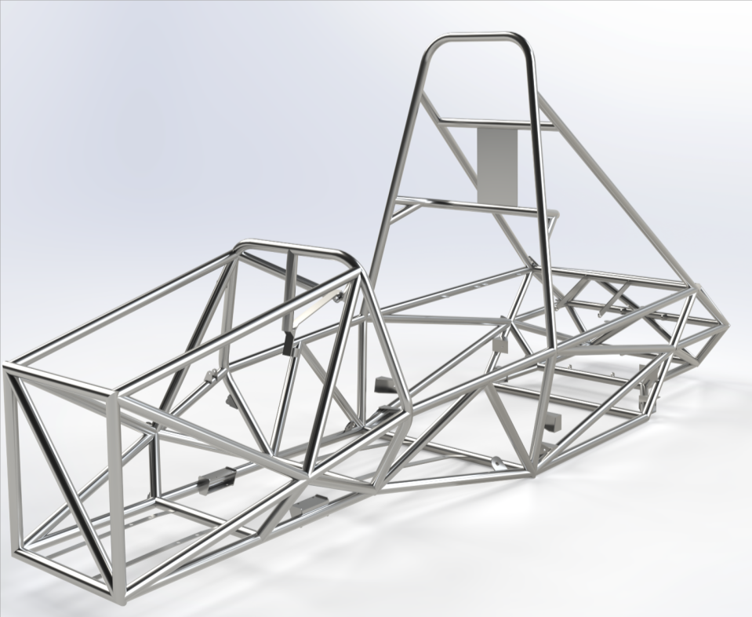

Introduction
I did my Senior Design Project at UH as the Chassis lead for the Formula SAE (FSAE) EV team for Fall 2025 and Spring 2026. FSAE is one of the most widespread college engineering competitions. Each year, participants develop a small electric race car from the ground up, applying engineering decision making and analysis. It is known for its rigorous technical involvement and interdisciplinary challenges. Every step of the project from concept to competition requires student involvement including securing sponsorships, supplier contact, and often in-house manufacturing.
My Role
After inspecting the current state of the project, we concluded that the previous frame design was not reusable. After years of retrofits from rule changes and attempts to correct design flaws, it had accumulated severe excess weight. There were multiple tube intersections with extremely acute angles, and some nodes connecting over 10 members. Keeping the old frame also meant severely limiting suspension configuration options. A full redesign of the frame to address design flaws in the previous model became one of the focal points of our season. I noticed this challenge as an excellent experience opportunity so I decided to lead the Chassis subsystem.
Frame Redesign
I approached the redesign using principles discussed in the Senior Design Project lectures from Dr. Trimble and Dr. Sorensen. I created requirements and constraints, researched existing solutions, developed prototypes, ran trade studies and FMEA, and converged on a suitable solution. I used SolidWorks to devise a rough concept by late September. I quickly realized how much of the design is constrained by the FSAE rulebook, so I began iterations by checking rules and adjusting accordingly. For specific sections, I researched other team designs and compared them to our requirements. Suspension mounts and component packaging were other crucial drivers of the design. I worked in tandem with all other subsystems to develop 3D models of their parts and make space in the frame to place them. The suspension mounting points are especially important on any frame because they connect the frame to dynamic loads from the tires.

A high performance chassis optimizes stiffness to mass, especially in torsion. We read a paper that discussed modelling the suspension and chassis as three series torsional springs. The key takeaway is that in order for the suspension dynamics to be predictable, the chassis should have negligible contribution to torsional deflection. In other words, the chassis should be many times stiffer than the suspension in torsion. We calculated that the frame must be stiffer than 900 Nm/deg. This value gave my chassis design a clear goal: reach the threshold while minimizing mass. I read some articles on the FSEA Design Judges website that discussed stiffness optimization. I ran static FEA in SolidWorks Simulation to get an idea of the current stiffness which appeared to be approximately 1000 [Nm/deg]. However, after researching other team numbers, most teams were stiffer. I documented stiffness analyses with various proposed changes such as adding additional braces and doubling triangulation to achieve shorter load paths. I found that doubling the triangulation of side impact structure achieved 47% stiffness increase and yielded only a 1.2% mass increase. I considered this a worthwhile tradeoff and implemented it into the final design.